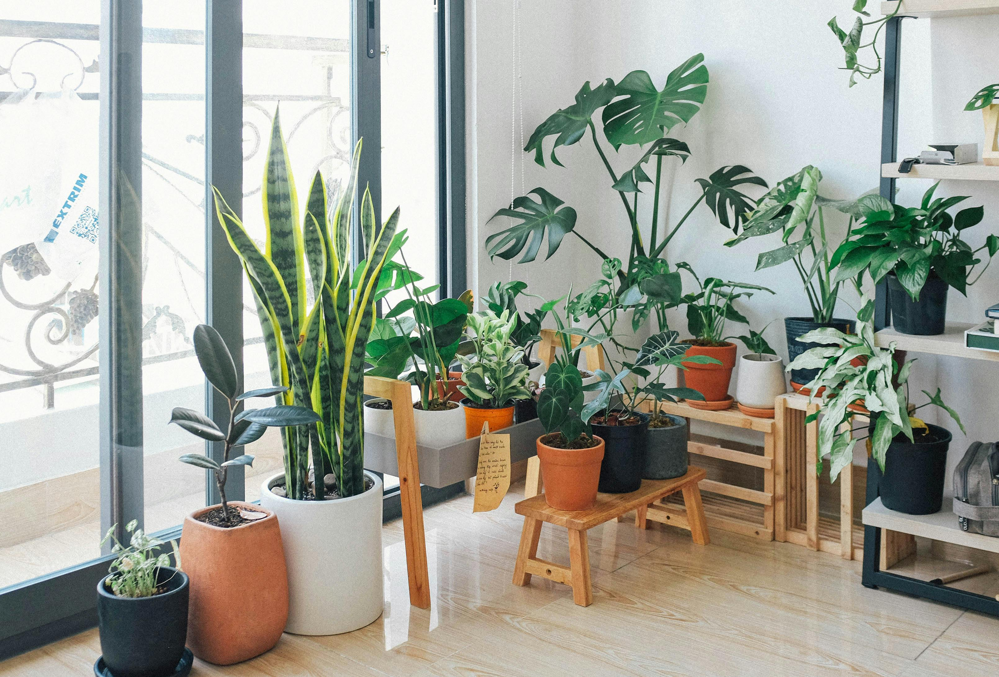

Pogledajte našu galeriju - Upoznajte se sa našim prelepim biljkama.
Pitali ste nas često - Saznajte korisne savete za negu biljaka.
Kontaktirajte nas - Budite slobodni da nas pitate sve što vas zanima.
Naš rasadnik osnovan je 2008. godine s misijom da vašim vrtovima i domovima pružimo prelep zeleni raj. Specijalizovani smo za uzgoj visokokvalitetnih sadnica, pružanje stručnih saveta o nezi biljaka i unapređenje vašeg prostora.

Kao i svi fanatici za negovanjem biljaka, tako i mi trazimo uvek sve najbolje za njih.
Isto tako, kao jedan maleni "plant community", nas moto je "nista nije uklesano u kamen", te smo uvek voljni da cujemo i vas glas, sugestije, te da ukoliko imate neke primedbe, zamerke, uvek budete slobodni da nam to i podelite, jer znanje je moc!

Upoznajte najnovijeg člana vaše porodice sobnih biljaka. Sobne biljke dolaze u svim oblicima, veličinama i stilovima, a u našoj proizvodnji imamo veliki izbor sobnih biljaka. Stoga dobro pogledajte oko sebe i odaberite biljke koje će biti savršeni dodaci vašem domu..
Kada primite svoje biljke:
1: Uklonite sav zaštitni omot.
2: Ako biljka ima oštećene listove, možete ih odrezati bez oštećenja biljke.
3: Preporučuje se da svoju biljku presadadite u novu vecu saksiju.
4: Sledite uputstva za njegu vaše biljne vrste koje se nalaze na stranici o nezi.
5: Uživajte u svojoj novoj biljci!

Svaka biljka zaslužuje sigurnu i pažljivu isporuku. Naš proces dostave osigurava da vaše nove sadnice stignu sveže i u dobrom stanju.
Svaku biljku pažljivo pripremamo za transport, koristeći foliju i kartonske kutije prema svim standardima, kako bismo sprečili oštećenja i isušivanje.
Naša posvećenost je da vaše biljke stignu što brže, bez ugrožavanja njihove zdravlja i vitalnosti.
